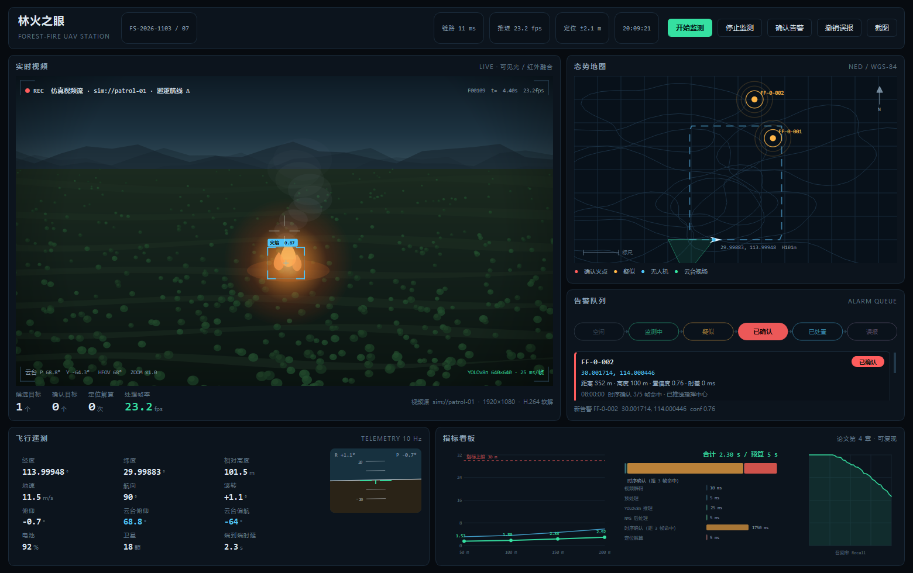
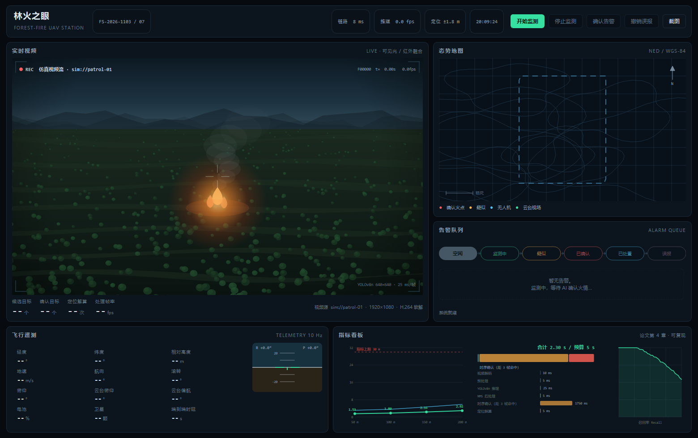
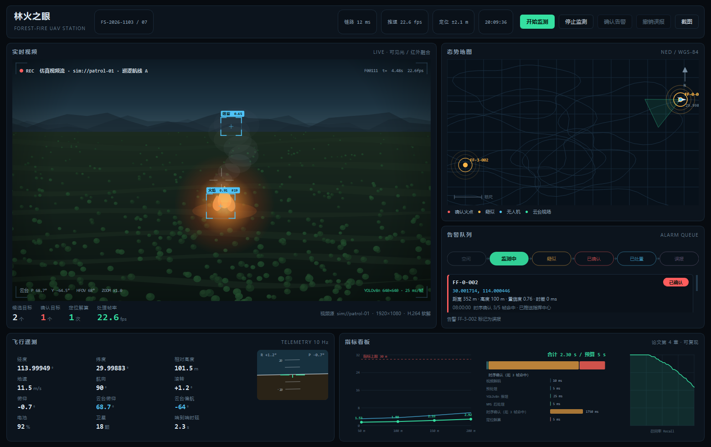
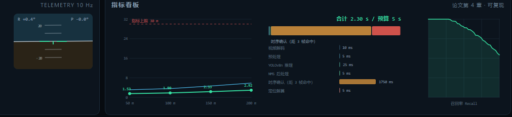

毕业设计《无人机环保监测方案设计》的工程实现：合成巡检视频 + AI 火情检测 + 单目火点定位 + 告警状态机 + 指挥地图 + 数据落库，全部收在一个 PyQt5 暗色指挥中心里。不联网、不依赖 GPU、开箱即跑。

指标 ≤ 30 m，P95 3.57 m
指标 ≤ 5 s，时序确认占 76%
仿真链路，目标 25 fps
含论文数值回归断言
pip install -r requirements.txt
python run.py # 启动地面站
python tools/report.py # 复算论文第 4 章指标表


单目定位几何闭环 像素 → 相机系 → 机体系（roll/pitch/yaw）→ NED → 经纬度，射线与地面求交。正反投影闭合误差 < 0.05 m；云台平视、射线不落地时返回 None，不给伪坐标。
时序确认 5 帧滑窗、IoU 0.3 关联、命中 3 帧才确认。把单帧误检压掉，代价是 1.75 s 延迟——这正是时延预算的主要开销，论文做了显式取舍。
告警状态机 + 空间去重 六状态显式迁移，非法迁移抛 ValueError；推送 30 s 冷却；同一火点 60 m 内只保留一条记录并刷新观测。
三线程流水线 采集按 25 fps 出帧、最新帧队列（满则丢最旧，杜绝延迟堆积）、推理线程做检测+确认+定位+告警，界面线程只消费结果。
| 指标 | 要求 | 实测 / 论证 | 结论 |
|---|---|---|---|
| R1 检测 | mAP50 ≥ 0.80，召回 ≥ 0.90，每帧误报 ≤ 0.1 | 时序确认后每帧误报 0 | 达标 |
| R2 帧率 | ≥ 25 fps | 24.8 fps（目标 25） | 达标 |
| R3 定位 | 100 m 高度 ≤ 30 m | 1.80 m（P95 3.57 m） | 余量 16× |
| R4 时延 | 端到端 ≤ 5 s | 2.30 s | 余量 2.7 s |
定位表由 2000 次蒙特卡洛（σ_px=2 px、σ_angle=0.5°）得到；噪声灵敏度显示角度噪声是主因（100 m / 0.5° → 7.2 m，而 2 px → 0.22 m）。